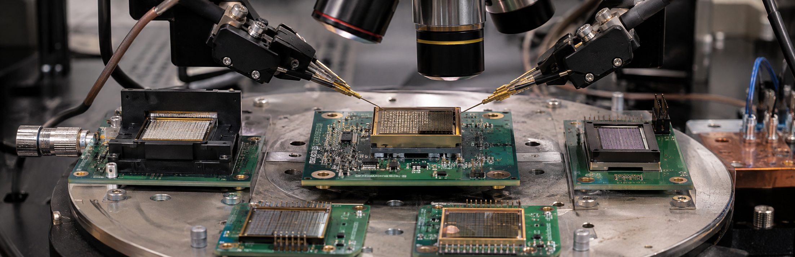
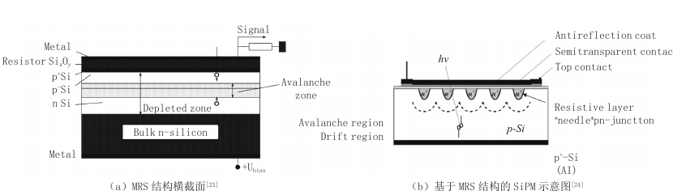
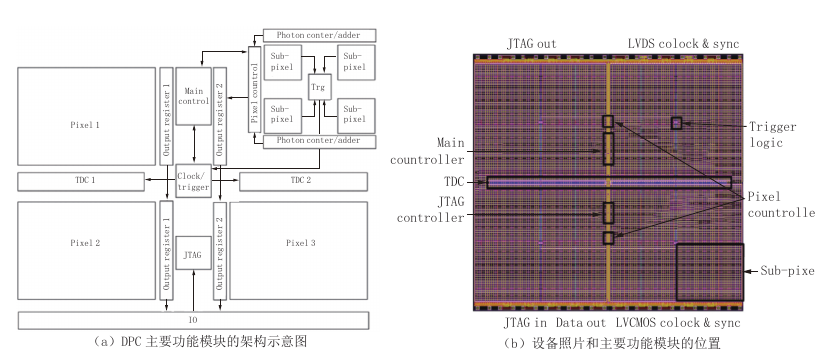
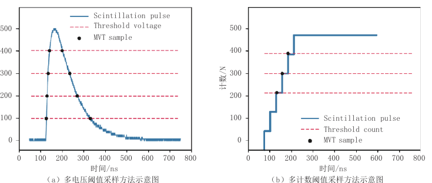

Turning a Photon into Data: How Silicon Photomultipliers Are Reshaping PET
Inside a PET detector, a scintillation crystal converts a 511 keV gamma ray into visible photons, and a photosensor turns that light into an electrical signal. Photomultiplier tubes long performed this task. Silicon photomultipliers, or SiPMs, now underpin many new PET systems because they are compact, operate at lower voltage, tolerate magnetic fields, and can be tiled into dense arrays.
An SiPM is not one monolithic amplifier. It contains many parallel single-photon avalanche diode (SPAD) microcells. Each cell behaves like an extremely sensitive switch: one detected photon initiates a carrier avalanche and produces a readable pulse. The combined response carries information about the number and timing of incoming photons.
A controlled avalanche in miniature

A SPAD operates above its breakdown voltage. A photon-generated carrier accelerates in a strong electric field and creates more carriers through collisions. A quenching resistor then lowers the local voltage, stopping the avalanche and allowing the cell to recover. Gain on the order of 105 to 106 makes a single photon electrically visible.
Compared with bulky PMTs, SiPMs can operate below 100 V. Devices summarized in the review can exceed 30% photon-detection efficiency and achieve single-photon timing below 100 ps, while remaining insensitive to magnetic fields. PET detector rings can therefore be made more compact and more compatible with systems such as MRI.
TOF-PET pushes timing toward its limits
Time-of-flight PET estimates where an annihilation occurred along a response line from the difference in arrival times of the two gamma rays. As that uncertainty shrinks, reconstruction can localize each event more effectively. The review describes a research frontier moving toward the formidable challenge of roughly 10 ps system timing—far beyond what one faster component can deliver alone.
Conventional analog SiPM readout sums currents from all microcells before sending the waveform off chip. In a large array, parasitic capacitance, process variation, long interconnects, and analog noise blur the edge that carries timing information. A faster sensor helps, but performance soon plateaus if the readout chain continues to discard detail.
Three digital routes, three sets of trade-offs
- Microcell/TDC arrays: time-stamp many cells individually and retain rich time, energy, and position information, but consume photosensitive area and readout bandwidth;
- Digital photon counters: share counting, triggering, and timing circuits across groups of SPADs, improving fill factor while requiring careful event aggregation;
- Multiple-count thresholds: sum microcell outputs and record when the count staircase crosses selected levels; the circuitry is simpler, but reconstruction depends on reliable prior models.

The first route preserves the most detail, but complex circuitry beside every cell reduces fill factor. Three-dimensional integration can stack the sensing and digital layers, easing the area conflict at the cost of harder fabrication. The second route is a mature compromise. The third can reach a reported 1 Mcps readout rate in the reviewed design, but only if the arrival statistics of scintillation photons are understood well enough to infer timing from fewer threshold records.
Following a burst of light as a staircase

Imagine each detected photon firing one microcell. The accumulated count rises as a staircase. The system does not need to report every step; it can record when the staircase crosses a few count levels, then use models of scintillation generation and transport to estimate the original arrival sequence. Complexity moves out of the pixel and into modeling and correction.
Dark counts can create false steps, optical crosstalk can make one photon resemble several, and cell recovery causes nonlinearity. Threshold number and placement, temperature compensation, device uniformity, and model error all affect timing. This is a physically informed compression scheme, not lossless magic.
The next detector starts with avalanche physics
Progress requires better understanding of the spatial and temporal development of carrier avalanches, together with joint models that follow light from crystal emission through optical transport to SPAD firing. Only then can designers decide which events must be preserved individually and which can be summarized by a few threshold crossings.
PET timing is not a competition between isolated components. Crystals, optical coupling, SiPMs, digital circuitry, and algorithms jointly determine coincidence timing. Co-design is how more of each detected photon's information can survive without sacrificing efficiency or readout capacity.
This feature independently interprets and rewrites the review “Advance in Silicon Photomultiplier for All-Digital Positron Emission Tomography” by Wentao Hu, Hui Lao, Ao Qiu, and Qingguo Xie. The Chinese-language article appeared in CT Theory and Applications, 2024, 33(4), 421–432. DOI: 10.15953/j.ctta.2024.015.